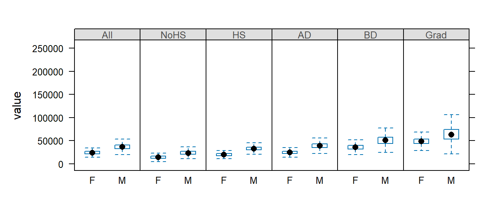

| lattice |
|---|
| 0.22.5 |
14 Lattice plotting environment
14.1 Data
The data files used in this tutorial can be downloaded from the course’s website as follows:
load(url("https://github.com/mgimond/ES218/blob/gh-pages/Data/dat1_2.RData?raw=true"))This should load several data frame objects into your R session (note that not all are used in this exercise). The first three lines of data frames used in the following sections are shown below:
head(dat1l, 3) Year Crop Yield
1 1961 Barley 16488.52
2 1962 Barley 18839.00
3 1963 Barley 18808.27head(dat1w, 3) Year Barley Buckwheat Maize Oats Rye
1 1961 16488.52 10886.67 39183.63 15171.26 11121.79
2 1962 18839.00 11737.50 40620.80 16224.60 12892.77
3 1963 18808.27 11995.00 42595.55 16253.04 11524.11head(dat2b, 3) State County Level Gender value Region
1 al Autauga All All 35881 South
2 al Baldwin All All 31439 South
3 al Barbour All All 25201 Southhead(dat2c, 3) State County Level Region All F M
1 ak Aleutians East Borough All West 21953 20164 22940
2 ak Aleutians East Borough NoHS West 21953 19250 22885
3 ak Aleutians East Borough HS West 20770 19671 2119214.2 The lattice package
The lattice package is an implementation of the Trellis display (or multi-panel display) used to visualize multivariate data or, more specifically, to visualize the dependencies and interactions between multiple variables. For example, the following lattice (or Trellis) plot displays the counts of people (grouped by gender, adult/child and economic status or crew) who perished on the Titanic.

In the following example, a scatter plot is produced for different crime types by US region.

Examples of some of the most common lattice plot types follow. Note that you will need to load the lattice package to run the following chunks of code.
library(lattice)14.3 Displaying univariate distributions
Let’s look at a simple example where the density distribution of yields (across all years) is conditioned on crop type.
densityplot( ~ Yield | Crop, dat1l, plot.points = "", layout = c(5, 1))
The layout=c(5,1) parameter instructs the lattice function to layout the panels along 5 column and 1 row. If you wanted the plots to be displayed in 5 rows and 1 column you would simply type layout=c(1,5).
The first thing to note is that the x-scale axis range is the same for all five plots. At first, this may seem as an inefficient use of the range of x values–for example, the buckwheat density plot is squeezed in the left-hand side of the plot, but it is important to understand the purpose of a trellis plot: to facilitate comparison of plots. By ensuring that all scale ranges remain the same, we can easily compare the plot shape. In the above plot, it is clear that the yield of buckwheat remains consistent across the years compared to Maize which displays the greatest variability across the years.
The lattice package also has a histogram function:
histogram( ~ Yield | Crop, dat1l, plot.points = "", nint = 20, layout = c(5, 1))Note the importance of having a table shaped in “long form”. The density plots are conditioned on crop type which requires that crop type be treated as different values of a same variable (i.e. column Crop in dat1l). The above plot could not be generated had crop types been treated as variables (i.e. columns) as in dat1w.
You can also compare the distributions to a normal distribution (i.e. a Q-Q plot):
qqmath( ~ Yield | Crop, dat1l, plot.points = "", layout = c(5, 1))
Boxplots are another popular way to view the distribution of values. In the following example, we create boxplots of income values as a function of gender (value ~ Gender) and condition this comparison on educational levels (| Level). Since the variable Gender contains three unique values (M, F and All) we will remove all records tied to the whole population (All) by passing a condition, dat2b$Gender != "All" (where != is interpreted as “not equal to”), to the dat2b index.
bwplot(value ~ Gender | Level, dat2b[dat2b$Gender != "All",] , layout = c(6,1))Note that bwplot automatically orders the conditional variable lexicographically unless the variable’s order is defined by its levels (the latter being the case in this example).
We may remove the outliers by passing the do.out = FALSE parameter to bwplot:
bwplot(value ~ Gender | Level, dat2b[dat2b$Gender != "All",] , layout = c(6,1), do.out = FALSE)
But note that the y-axis range still reflects the outlier values. We will need to explicitly define the y limits using the ylim= parameter.
bwplot(value ~ Gender | Level, dat2b[dat2b$Gender != "All",] , layout = c(6,1), do.out = FALSE, ylim=c(0,125000))14.4 Visualizing multivariate data
14.4.1 Basic line plots
The Lattice package allows us to plot several variables on a same plot. For example, we can plot yields vs year for each crop on a same plot:
xyplot(Barley + Buckwheat + Maize + Oats + Rye ~ Year , dat1w, type = "o", pch=20,
auto.key = list(lines = TRUE, space = "right"),
main = "Grain yield", ylab = "Yield", xlab = "Year")Note the use of the wide version (dat1w) of the original dat1 dataset. Each crop is treated as its own variable (column) and is added to the plot using the + symbol.
We can also split the plots across a Trellis system by conditioning yields on crop type. But this now requires the use of the long form of the data (i.e. dat1l). The next plot also differs from the previous plot in that we substitute a point-line symbol (type="o") with a line symbol only (type="l").
xyplot(Yield ~ Year | Crop, dat1l, type = "l", pch=20, layout=c(5,1),
main = "Grain yield", ylab = "Yield", xlab = "Year")
14.4.2 Scatter plots
One key benefit of a Trellis system is its ability to generate bivariate scatter plots conditioned on one or more variables. For example, we may wish to compare incomes between female and male for each county and condition this relationship on educational attainment. This requires that male and female be assigned their own columns (since they are now treated as variables) and that educational attainment be assigned as another column whose values are each levels of educational attainment. We will therefore use dat2c.
dat2c$Level <- factor(dat2c$Level, levels = c("All", "NoHS", "HS", "AD", "BD", "Grad" ))
xyplot( M ~ F | Level, dat2c, type = c("p","g"), pch=20, cex=0.6,
col.symbol=rgb(0,0,0,0.1), aspect="iso", abline=c(0,1), layout=c(6,1),
xlab="Female income ($)", ylab="Male income($)")The xyplot function is passed several parameters. The parameter type = c("p","g") instructs the function to generate both points, "p", and a background grid ,"g". Parameter type can accept many other options, a few are listed in the following table:
| Option | Adds… |
|---|---|
"p" |
Points |
"l" |
Lines |
"b" |
Both points and lines |
"o" |
Both points and lines |
"r" |
Regression line |
"g" |
Reference grid |
"smooth" |
LOESS fit |
"spline" |
Cubic spline fit |
The parameters pch and cex define the symbol shape and size. The parameter col.symbol defines the point color. The parameter aspect="iso" sets the aspect ratio in such a way that a unit of measure along x matches that of y, this facilitates income comparison between both sexes since the scales match exactly. The parameter abline=c(0,1) generated a 45° line. If median incomes for male and female were identical in each county, the points would line up along the 45° line. Most points are above the line indicating that male income is greater than female income when aggregated at the county level.
Note that the point distribution seems skewed. We can warp the values in a log() function to help reveal the relationship between male and female income:
xyplot( log(M) ~ log(F) | Level, dat2c, type = c("p","g"), pch=20, cex=0.6,
col.symbol=rgb(0,0,0,0.1), aspect="iso", abline=c(0,1), layout=c(6,1),
xlab="Log of female income ($)", ylab="Log of male income($)")We can take this a step further. We could condition the relationship in income between male and female on both educational attainment and states or regions. We won’t condition the scatterplot on states as this would generate 50 x 6 separate plots, so we will condition the plots on region.
Note that since the output will consist of 6 (levels) x 4 (regions) we will need to modify the layout parameter to layout=c(6,4). We will also stick with the log transformation of income since it seems to do a good job in helping reveal the relationship between both income values.
xyplot( M ~ F | Level + Region, dat2c, type = c("p","g"), pch=20, cex=0.6,
col.symbol=rgb(0,0,0,0.1), aspect="iso", abline=c(0,1), layout=c(6,4),
xlab="Log of female income ($)", ylab="Log of male income($)")14.5 Customizing trellis plots
Various elements of a trellis plot can be customized by passing the graphic parameters to the trellis.par.set() function. To get the list of graphic parameters and their values call the trellis.par.get() function.
trellis.par.get()Output for three parameters is shown below:
$ fontsize :List of 2
..$ text : num 12
..$ points: num 8
..$ col : chr "gray90"
..$ lwd : num 1
..$ col : Named chr [1:7] "#0072B2" "#E69F00" "#009E73" "#D55E00" ...
.. ..- attr(*, "names")= chr [1:7] "blue" "orange" "bluishgreen" "vermillion" ...
..$ fill : chr [1:7] "#CCFFFF" "#FFCCFF" "#CCFFCC" "#FFE5CC" ...
..$ font : num [1:7] 1 1 1 1 1 1 1
..$ pch : num [1:7] 1 1 1 1 1 1 1
$ superpose.polygon:List of 5Each parameter consists of a list of elements. For example, the graphic parameter fontsize is made up of two modifiable elements: text and points. The following figure shows a few of the parameters and their associated graphical element:

For example, we will modify the Titanic survival barchart by changing the strip background colors, the bar polygon colors, the text size and color and the label size and color as follows:
# Define an array of colors. The first array generates unique hues while the
# second generates different shades of grey
col.qual <- c("#FBB4AE","#B3CDE3","#CCEBC5","#DECBE4","#FED9A6","#FFFFCC","#E5D8BD")
col.grey <- c("#DFDFDF","#BFBFBF","#9F9F9F","#808080","#606060","#404040","#202020")
# Modify the Trellis parameters
trellis.par.set(superpose.polygon = list(col = col.qual, border = "black"))
trellis.par.set(strip.background = list(col = col.grey))
trellis.par.set(add.text = list(cex = 0.8, col="grey20"))
trellis.par.set(par.xlab.text = list(cex = 0.8, col="grey20"))
# Now generate the strip charts
barchart(Class ~ Freq | Sex + Age, data = as.data.frame(Titanic),
groups = Survived, stack = TRUE, layout = c(4, 1),
auto.key = list(title = "Survived", columns = 2))
You’ll note that some of the elements are composed of more than one value such as strip.background’s col element which takes on 7 distinct color values. We did not need to modify all seven since only the first two were used (one for age group and the other for gender). Had we conditioned the plot on a third parameter, a third strip would have been added and the third color in col.grey would have been used. For example:
barchart(Class ~ Freq | Sex + Age + Survived, data = as.data.frame(Titanic),
groups = Survived, stack = TRUE, layout = c(4, 2),
auto.key = list(title = "Survived", columns = 2))
Note the third strip (Yes vs No) with the third background color (#9F9F9F) in the color array col.grey.